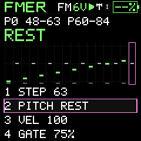
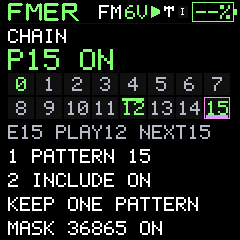
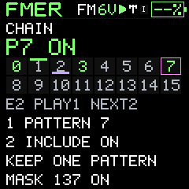

Patterns and performance
Hand-edit notes, rests and sections
Edit timing and duration without recording another pass.
SEQ / STEP EDIT uses K1 for the step cursor, K2 for pitch, K3 for velocity and K4 for gate. SEQ / NOTE EDIT uses cursor, pitch, note length and gate. Select a note and turn ALGORITHM to move the whole event earlier or later. A move that collides with another event is refused rather than silently deleting that event.
SEL deletes the selected note. With SEL held, pitch changes can enter a rest or tie. Rest leaves silence at that step; Tie continues an earlier note. Length editing extends a note through tie steps. The gate is the fraction of a step spent sounding, not the number of tied steps.
SEQ / COPY/EDIT uses K1 for range start, K2 for count, K3 for destination and K4 for the action. Press SEL to apply Copy, Paste, Cut, Clear or guarded Undo. The clipboard is temporary, not a saved project library. Manual destructive edits are blocked during active recording. Undo only applies when its source state is still valid.
Write a phrase
- Choose an empty pattern and set its length.
- At step 1 enter a pitch and velocity.
- Use NOTE EDIT to hold it for four steps.
- Leave the next step as a rest, then enter the next note.
- Copy a short range to a later destination and alter its pitch.
- Play the phrase, move any early/late event, then save the project.




